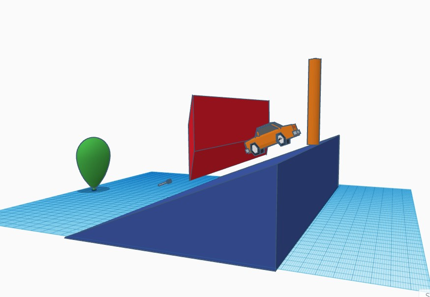

Engineering Journal
Albany Lansang P4
Week 3, 09/02/2022
This week, we started working now that we're more settled in. We got started on TinkerCad and got to mess around a little. The first thing I designed was cheese and then I designed a sink.


Week 4, 09/09/2022
We learned about mechanical engineering and what our project on this unit would be. We watched some examples on old Rube Goldberg projects and Mr. Kim explained that we would be doing the same thing. The objective being to have some obstacles that would end in a needle popping a ballon. On that friday, we did an exercise where we would draw the letter "E" on a smaller piece of paper and then translate those measurements on a much larger piece of paper.

Week 5, 09/16/2022
This week, we spent a lot of time actually getting to build our Rube Goldburg projects after CAD-ing it last week. On Friday, the challenge was to build a paper boat that could hold weight while in the water. Our boat didn't last very long but it was ok, it was a cool boat(that I also don't have a picture of).
Week 6, 09/23/2022
We spent most of the week finishing up our Rube Goldburg projects. On the last day of the week, we got to test if they worked and if we needed to adjust anything. We also spent time adjusting the CAD because of a few modifications. Thankfully, for our group project, it worked after a couple tries. With a pully system and some marbles, we were able to pop the ballon after a series of obstacles

Week 7, 09/30/2022
Starting the new unit that goes into Hardware engineering, we were visited by a Guest speaker on Wedensday. After we listened to the speaker, we had had to "dissect" an old laptop and navigate all the parts. Mr.Kim had us name all the parts on a worksheet and then put the laptop back together when we were done.


Week 8, 10/06/2022
This week, we started learnign about our new unit in bioengineering. There was a slide show where we learned about how broad of a spectrum biological engineering is and all the different things it consists of including prosthetics and genetic and tissue engineering. On The first full day of class, we worked on a prosthetic we would build for an animal, just to get into designing things around living creatures. I decided to build a prosthetic for an angler fish whose esca was no longer. It's a fairly simple design that wraps around the body of the fish, with an illuminescent light at the end of the arc. It serves the same purpose as to act as bait for other prey that the angler fish can eat.
Week 9, 10/14/2022
After the bioengineering unit, we started on our aerospace engineering unit. The project for this unit it to build bottle rockets. The goal is to go as high as possible and also possibly incorporate a payload. The payload is optional as it's a bit more challenging to make. As far as our weekly challenge goes, we made a flying paper object, which mostly consisted of paper airplanes or just crumpled up paper balls. The goal was to hit a bin from the balcony. It didn't take long for everyone to throw their paper and realize the challenge was harder than we thought--it was windy on Thursday. After the challenge, we came back inside the classroom to finish CAD-ing our bottle rockets and update our websites for quarter grades at the end of the week.

Week 10, 10/21/2022
Most of the week was spent drafting and finalizing our bottle rockets and finding all the materials we needed. On the final day of class, we got to launch the rockets with Ms. Petrossian's class. The basic trend of the rockets was the sharp tip that would help the rocket glide through air as well as the "wings" on the sides, also helping with the aerodynamics of the rocket. My group also tried to incorporate a payload but the parachute attached to the payload got stuck on a piece of tape. Though, our rocket did end up traveling relatively far compared to some other bottle rockets.

Week 11, 10/28/2022
This week, we got into the brief unit of Environmental Engineering. Mr. Kim presented some slides so that we, as a class, could have some general knowledge before going into our project/lab. On the project day, we were given materials to make a water filter. The materials consisted of a water bottle, some cotton balls, sand, pebbles, and bigger rocks. As the water travels through the materials, bigger rocks all the way to the cotton balls, any debris was supposed ot be removed from the water and technically making clean water.


Week 12, 11/04/2022
This week, we got started in our Electrical Engineering Unit. Mr.Kim presented his slides to us so we would have a better understanding of Electrical Engineerign and on the second day of class, we worked on TinkerCAD where we were introduced to breadboards and practiced circuiting.
Week 13, 11/11/2022
After messing around on TinkerCAD last friday, we were able to use an actual breadboard and remake the labs we did on TinkerCAD in real life. The process was a lot more fun than trying to do it virtually. Figuring out where everything had to go all the while following the lab instructions was rigorous but fun.


Week 14, 11/18/2022
Just to pack up our electrical engineering unit, we programmed the circuit board to light up to a certain pattern. This was really how far we got it terms of how complicated things would get. We hardly got a taste of how much work goes into the coding and translating to the circuit board. The process included plugging in the arduino into one of the laptops to connect the program all the way to the LED lights.
Week 15, 12/02/2022
This week, we were formally introduced into our civil engineering unit. Mr. Kim did his regular slide show presentation, including what project we would be up to next- spaghetti bridge. The criteria of the bridge alloted for 20 pieces of spaghetti, at least 2 feet long, and only glued together by wood glue. We spent the first day of class drawing out our ideas on paper and then translating that onto tinkerCAD. On about the last of class was when people started playing with the 100 pieces of pasta we got.
Week 16. 12/09/2022
After being introduced to the whole civil engineering unit, and getting more comfortable with the pasta, a lot of the class got more hands on this week after designing their first or second iterations of our bridges. With the amount of pasta we were given, we had a little bit of time to experiment with some different bridges before the final day. It was hard to see what worked with just our bridges so we also observed other bridges to see what held and what did not.
Week 17, 12/16/2022
This week, the class spent time finalizing our spaghetti bridges. My group, however, spent a lot of time working on a different iteration of our bridge. After already having made 3 different kinds, all with not enough structure or spaghetti. I spent the beginning of the week designing the bridge on tinkerCAD and then we spent the last days of class breaking the spaghetti into the right pieces and gluing the pieces together.
Semester 1 Final, 12/20/2022
We got to test our final iteration of our bridge along with Ms.Petrossian's class. Throught this whole process, I've learned a lot of things. I've learned not to put wood glue on cardboard because you'll never get it off and waste a lot of spaghetti that way. I learned that rationing out 20 pieces of spaghetti would be harder than one would think. And this whole project has taught me to use all my resources wisely and to take initiative of things when no one else does. I've developed a new found appreciation for civil engineers.
START OF SEMESTER 2
Week 19, 01/13/2023
For our first week back at school after Winter Break, we dove into Business Engineering. We learned about how business is very weaved into engineering and how it's components are made up of other branches of engineering. The project this week was just to pitch a product that would solve any problem. It was really just a big brain storm on what we could invemt to make our lives just a little bit easier. The product our group pitched was a portable scooter which was meant to be easy to carry as well as get you to Point A to Point B in less time.
Week 20, 01/20/2023
To ease back into things, Mr. Kim presents what we're going to be focusing on for a big chunk of time. He gives us a rundown of what he wants to happen and how things should follow as the weeks go by. This week was mainly spent on choosing what kind of project we would be working on. And on friday, we had a cool little challenge day where we learned about chemical engineering and got to play with cornstarch and water to create oobleck. A non-newtonian substance.
Week 21, 01/27/2023
This week, everyone in the class had to decide which projects they would be working on. After we had decided, we had to type up the project proposal to hand to Mr.Kim and describe to him as to what we were planning on doing. Because Amira and I picked the Campus Research Project, we picked a problem that we noticed on school and found a solution to fix it. After thinking for a bit, we decided to target the flooding that was prominent in the girls' restroom in the 5000s building. Our idea was to create tiles that had better drainage and would promote water to actually drain.
Week 22, 02/03/2023
After being introduced to the big project for this quarter, we were prompted to make a CAD design for each of our projects. Amira and I had chosen to go with the special tiles that will help promote drainage in the girls' bathroom at school as there is a huge flooding problem in there almost everyday. The CAD just gives a general idea as to what we're aiming for and also as we didn't have direct measurementrs yet.
Week 23, 02/10/2023
This week was more tinkering of the designs of our projects. Amira had even gone home and made a sample of what we want the project to look like when we finish in hindsight. she used cardboard to play as the tiles and straws to play as the tubing and pipes we're looking to use. At the end of the week, we had another challenge that involved creating a device out of only popsicle sticks and rubber bands to hold a balloon at the end of a meter stick, in which we would later run 100 meters with. The challenge was super fun because we got to go outside and play with water balloons and race other kids. It kind of felt like kindergarten.
Week 24, 02/17/2023
This week, Amira and I had a better more designed tile, going over all the details in class. I drew out a stencil for the tiles and we decided on the quantity of tiles we wanted to work with for our sample. Earlier in the week, we had some what of a fail. We let the tiles dry for too long to cut out the semi circles to fit the tubing. I ended up working on the project at home for the weekend.
Week 25, 02/24/2023
This week, Amira and I tried to finalize our project but we had a huge set back as I had made and dried the tiles already and she had gotten the wrong pipe size. I learned that the bigger the radius for tubing, the more expensive the cost so we fugured the best solution was to start over again and have myself make the tiles with the correctly fitted holes for the tubing and piping.

Week 26, 03/03/2023
Our project performed pretty well, I think. It's kind of hard to gauge that as there was nothing else to really base it off of. As one of the only campus research projects done in class, it came along really well for what started out as a really ambitious project. We achieved what we set out for as far as better drainage goes. The design we created from the clay does match our CAD design because we desired to have that kind of structure as it was one of the main points of the project. From building and creating our project, we learned to account for many errors. There were so many setbacks and challenges we faced, it became discouraging at one point. But we only had the option to keep going and follow through with what we started. I would say the most challenging part about making the project was the amount of time and money we had to put into it. Another one of the challenges was communicating with my partner on what product to buy and the dimensions of the tubing and the tiles. There were many compromises.
Week 28, 03/24/2023
The week after spring break, we were introduced to a new project. The objective of the project is to create a device that would ensure an egg would not break after enduring a drop from three stories high. On the first day of class, we were debriefed on the project itself. After the presentation, we had the time to brainstorm ideas and create a build of materials. The design we are going with is box like and will be cushioned with cotton balls. On top of the carrier for the egg, we will also add a parachute to lessesn the force in which the egg hits the floor when landing after falling.
Week 29, 03/31/2023
This week was mainly spent finalizing our devices so that our eggs would not break after being dropped from three stories high. We did not have materials to build until Wednesday so we really had to get a lot of the building done on that day. We decided to tweek the device so that there was no longer a parachute but rather a field of straws protecting the box on all sides. On Friday, we only had a little time to put together the rest of the box. We also had lined the inside with cotton balls and also cushioned the egg with two partially blown up water balloons.
Week 30, 04/07/2023
This week, we were introduced to our final project for the semester. To wrap up the year, we're doing more of a fun project where we make cardboard boats! The objective of the project is that we have to create a cardboard boat that can withstand the weight of two of our group members and will be dynamic enough to have them travel to the other side of the pool without sinking. We were also told that our materials would be cardboard, string, and tape. We are allotted as much cardboard as we need but we are limited to only one roll of tape. Because this is our last project and we have so much time to work on it, our teachers are definitely expecting a more intricate design of the boat. At the end of the week, we had a challenge where we were asked to make a bridge as long as we could with 20 post it notes. Our group did pretty well as we got the post its to reach a max distance(and hold) of 22 feet!

Week 31, 04/14/2023
This week was the first week we given our materials to start building our cardboard boats. Because of the time we have to build the boats, it was kind of staggered so we wouldn't use up all the cardboard at once. So on Tuesday, we worked with two pieces of cardboard. Pieces in which we were making tubes out of that would be at the bottom of our raft. Most of this week was also spent deciding how long we needed to make the boat because one of the group members going on the boat is significantly taller than the other. So we were figuring out a good middle ground in which both of them could lay across the boat without getting wet.
Week 32, 04/21/2023
Last week was spent finalizing a design for our boat and making any modifications we wanted to the old design. We spent a good while cutting cardboard and shaping the cardboard into tubes. The tubes would be used to keep air under the raft/boat, to give it more time to sink and fully go under water. We also had the opportunity to test our prototypes in the pool. Our prototype was too small so it wasn't the most accurate.
Week 33, 04/28/2023
This week, we got a lot more cardboard to work with so we could work on the rest of the boat. We used a lot of it to layer the bottom of the raft, allowing the water to seep through each layer slowly. We also started working on the front of the boat, making it a triangular shape so that it could more easily cut through the water when paddling.
Week 34, 05/05/2023
This week, we spent a majority of the time putting our boats together. Because of AP exams, we had to stay in the classroom to build the boats. It was a little overwhelming with all the cardboard and people just clumped together in one room. We made it work, though. For my group, we needed to cut out a few more pieces of cardboard but that required retrieving more cardboard. Jasmine left to go get some and she came back with the biggest box I've ever seen. We considered just making that our boat. But we decided against it. With more cardboard, we got to cutting out the pieces that we needed and organizing them in a way we knew to just tape them together during the next class period. Because we've spent so much time just shaping the boat and kind of tweaking it along the way, we really need to be efficient with our time and start taping the pieces together and reinforcing the bottom of the boat, hopefully finishing up with it all together by the end of next week.